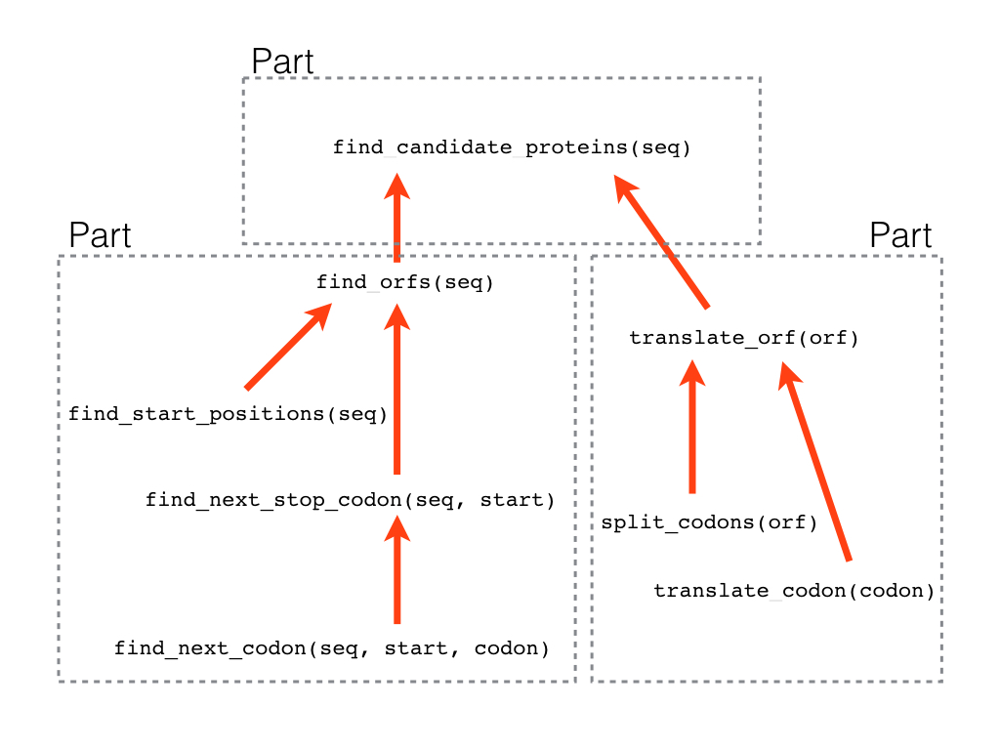

38 Finding genes
This chapter is a programming project where you will find open reading frames in the genome of a particularly virulent strain of E. coli.
In this project, you will analyze DNA to identify the open reading frames (ORFs) and the proteins they encode.
Download the files you need for this project:
https://munch-group.org/bioinformatics/supplementary/project_files
e_coli_O157_H157_str_Sakai.fastacontains the full genome of the Escherichia coli O157:H7 Sakai strain (yes the full genome).
You also need to download the two project files:
orfproject.pyis an empty file where you must write your code.test_orfproject.pyis the test program that lets you test the code you write inorfproject.py.
Put all three files in a folder dedicated to this project. On most computers you can right-click on the link and choose “Save file as…” or “Download linked file”.
Four your convenience, the file orfproject.py already contains three global constants (variables that must never be changed by the code). One is a dictionary codon_map, which maps codons to letters that represent amino acids. The other two are a string, start_codon, and a list, stop_codons. You can refer to these three variables in your code, but obviously, never change them.
The project has three parts.
- In the first part of the project, you will write the code necessary to identify ORFs in a long genomic sequence.
- In the second part, you will use the code you wrote on the programming project about translating DNA to translate each ORF into a protein sequence.
- In the third part, you will use the code from parts one and two together to find candidate proteins encoded by ORFs in a genomic sequence.
Start by reading through the exercise before you do anything else. That way you have a good overview of the tasks ahead. Here is a mind map of how we split the larger problem into smaller bits and how they fit together:

Finding Open Reading Frames
Find the start positions of ORFs in a DNA sequence
The first task is to write a function that finds all the possible positions where an ORF can begin.
Write a function, find_start_positions, which takes one argument:
- A string, which is a DNA sequence.
The function must return:
- A list of integers, which represent the indexes of the first base in start codons in the DNA sequence argument.
Example usage:
find_start_positions('TATGCATGATG')should return
[1, 5, 8]Your function should contain a for-loop that iterates over all possible positions in a DNA string where a codon can begin. Not surprisingly, these are all the positions except for the last two. So start out with this:
def find_start_positions(seq):
for i in range(len(seq) - 2):
print(i)Now, instead of just printing i, try and make it print the three bases following i using the slicing technique:
triplet = seq[i:i+3]I.e. if your sequence is 'TATGCATGATG' it should first print 'TAT' then 'ATG' then 'TGC' and so on.
When you have this working you should change the code so that triplets are only printed if they are start codons. You can use an if-statement that tests if each triplet is equal to start_codon.
Then try and make your function print i only when i is the first base of a start codon.
Finally, modify the function so all the relevant values of i are collected in a list using the same technique as in the split_codons(orf) function, and then return this list from the function.
Finding the next occurrence of some codon in an ORF
Now that you can find where the ORFs begin in our sequence you must also be able to identify where each of these end. As you know, an ORF ends at any of three different stop codons in the same reading frame as the start codon. So, starting at the start codon of the ORF, we need to be able to find the next occurrence of some specific codon. I.e. you should look at all codons after the start codon and find the first occurrence of some specified codon. If the function does not find that codon in the string it should return None.
Write a function, find_next_codon, that takes three arguments:
- A string, which is the DNA sequence.
- An integer, which is the index in the sequence where the ORF starts.
- A string, which is the codon to find the next occurrence of.
The function must return:
- An integer, which is the index of the first base in the next in-frame occurrence of the codon. If the function does not find that codon in the string it should return
None.
Example usage:
find_next_codon('AAAAATTTAATTTAA', 1, 'TTT')should return
10Your function should contain a for-loop that iterates over all the relevant starts of codons. Remember that no valid codon can start at the last two positions in the sequence. E.g. if the second argument is 7 and the length of the sequence is 20 then the relevant indexes are 7, 10, 13, 16.
Start by writing a function just with a for-loop that lets you print these indexes produced by range. Figure out how to make the range function iterate over the appropriate numbers.
def find_next_codon(seq, start, codon):
for idx in range( ?? ):
print(idx)When you have that working, use the slicing technique to instead print the codons that start at each index.
Finally, add an if-statement that tests if each codon is equal to codon. When this is true, the function should return the value of idx.
Finding the first stop codon in an ORF
Now that you can find the next occurrence of any codon, you are well set up to write a function that finds the index for the beginning of the next in-frame stop codon in an ORF.
Write a function, find_next_stop_codon, that takes two arguments:
- A string, which is the DNA sequence.
- An integer, which is the index in the sequence where the ORF starts.
The function must return:
- An integer, which is the index of the first base in the next in-frame stop codon. If there is no in-frame stop codon in the sequence the function should return
None.
Example usage:
find_next_stop_codon('AAAAATAGATGAAAA', 2)should return
5Here is some inspiration:
- You should define a list to hold the indexes for the in-frame stop codons we find.
- Then we loop over the three possible stop codons to find the next in-frame occurrence of each one from the start index. You can use
find_next_codonfor this. Remember that it returnsNoneif it does not find any. If it does find a position you can add it to your list. - At the end, you should test if you have any indexes in your list.
- If you do, you should return the smallest index in the list. I.e the ones closest to the start codon.
- If you did not find any stop codons the function must return
Noneto indicate this.
Finding ORFs
Now you can write a function that uses find_start_positions and find_next_stop_codon to extract the start and end indexes of each ORF in a genomic sequence.
Write a function, find_orfs, that takes one argument:
- A string, which is a DNA sequence.
The function should return:
- A list, which contains lists with two integers. The list returned must contain a list for each ORF in the sequence argument. These lists each contain two integers. The first integer represents the start of the ORF, the second represents the end. The function should handle both uppercase and lowercase sequences.
Example usage:
find_orfs("AAAATGGGGTAGAATGAAATGA")should return
[[3, 9], [13, 19]]Start by using find_start_positions to get a list of all the start positions in sequence:
def find_orfs(seq):
start_positions = find_start_positions(seq)When you have that working, add a for-loop that iterates over the start positions. Inside the for-loop, you can then get the next in-frame stop codon for each start position by calling find_next_stop_codon. Try to print the start and end indexes you find to make sure the code does what you think.
Finally, you need to add a [start, stop] list for each ORF to the big list that the function returns. To append a list to a list you do write something like this:
orf_coordinate_list.append([start, stop])Test your function. Chances are that some of the end positions you get are None. This is because some of the start codons were not followed by an in-frame stop codon. Add an if-statement to your function that controls that only start-stop pairs with a valid stop coordinate are added to the list of results.
Translation of open reading frames
We need to translate the reading frames we find into the proteins they may encode. So why not use the code you already wrote in the programming project where you translated open frames? Copy the content of translationproject.py into orfproject.py. Now you can use the function translate_orf to translate your ORFs.
Put everything together
Read in genomic sequences
The file e_coli_O157_H157_str_Sakai.fasta contains the genome that we want to analyze to find open reading frames. This is an especially nasty strain of Escherichia coli O157:H7 isolated after a massive outbreak of infection in school children in Sakai City, Japan, associated with consumption of white radish sprouts.
You can use the function below to read the genome sequence into a string.
def read_genome(file_name):
f = open(file_name, 'r')
lines = f.readlines()
header = lines.pop(0)
substrings = []
for line in lines:
substrings.append(line.strip())
genome = ''.join(substrings)
f.close()
return genomeNow for the grand finale: Using read_genome, find_orfs and translate_orf you can write a function that finds all protein sequences produced by open reading frames in the genome.
Write a function, find_candidate_proteins, that takes one argument:
- A string, which is a genome DNA sequence.
The function must return
- A list of strings, which each represent a possible protein sequence.
Note that this is a full genome so finding all possible proteins will take a while (~5 min.). You can start by working on the first 1000 bases:
Example usage:
genome = read_genome('e_coli_O157_H157_str_Sakai.fasta')
first_1000_bases = genome[:1000]
find_candidate_proteins(first_1000_bases)should return
['MSLCGLKKESLTAASELVTCRE*', 'MKRISTTITTTITTTITITITTGNGAG*',
'MQNVFCGLPIFWKAMPGRGRWPPSSLPPPKSPTTWWR*', 'MPGRGRWPPSSLPPPKSPTTWWR*',
'MLYPISAMPNVFLPNF*', 'MPNVFLPNF*', 'MSCMALVC*', 'MALVC*']The function should call find_orfs to get the list of start-end pairs. For each index pair, you must then slice the ORF out of the sequence (remember that the end index represents the first base in the stop codon), translate the ORF to protein, and add it to a list of proteins that the function can return.
To check your result note that all returned sequences should start with a start codon 'M', end with a stop codon '*' and contain no stop codons in the middle.
On your own
This is where this project ends, but you can continue if you like. Given a long list of candidate proteins of all sizes, what would you do to narrow down your prediction to a smaller set of very likely genes? If you have some ideas, then try them out.
- Maybe you can rank them by length? What is the expected minimum length of proteins?
- Maybe you can look for a Shine-Delgarno motif upstream of the start codon? You know how to do that from the lectures.
- You can also try to BLAST them against the proteins in Genbank. The true ones should have some homologs in other species.